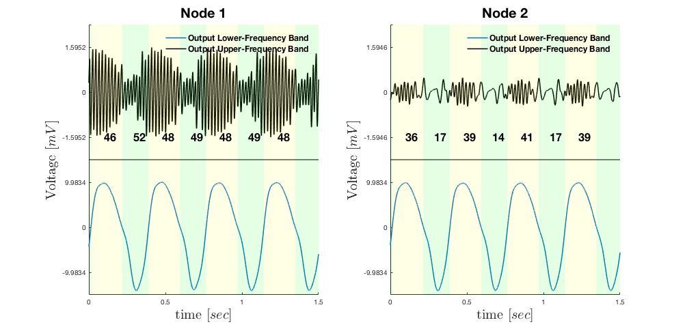

Chehelcheraghi M, van Leeuwen C, Steur E, Nakatani C (2017) A neural mass model of cross frequency coupling. PLoS One 12:e0173776 is available from a link in the above paper: https://zenodo.org/record/248829 To run: After downloading and expanding the archive type "Main" to start Main.m on the matlab prompt. After a few minutes graphs similar to figure 6 in the paper appears: 